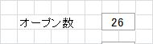
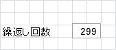
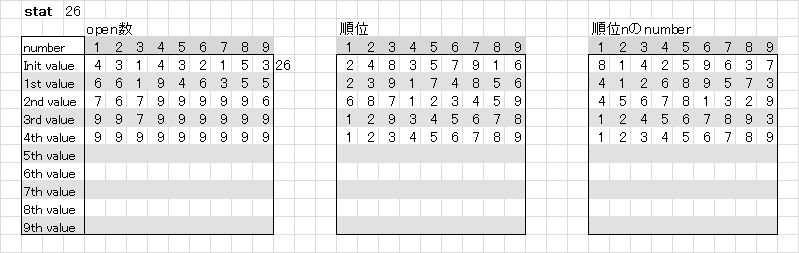

｢数独｣問題作成ツール
数独の問題を作成するツールをエクセルのマクロで組みました。 (ダウンロードはこのページの下の方でできます。)
問題作成の準備
-
｢パターン選択｣には、真ん中のブロックでオープンさせるマス目を明示的に指定します。

数値は直接入力して下さい。特に上下限チェックなどしていないので、1～12までの値を入力して下さい。
空欄にすると1で問題作成が始まります。 -
｢オープン数｣に最初にオープンさせるマス目の数を指定します。

数値は直接入力して下さい。特に上下限チェックなどしていないので、妥当と思われる値を入力して下さい。
数独の問題ですから、30前後が妥当な値です。空欄にすると26で問題作成が始まります。
このツールで作成できた｢オープン数｣の最小値は以下の通りです。
｢パターン選択｣が奇数の場合：23
｢パターン選択｣が偶数の場合：24 -
｢繰返し回数｣には、試行回数を指定します。

数値は直接入力して下さい。特に上下限チェックなどしていないので、妥当と思われる値を入力して下さい。
｢オープン数｣に依存しますが、99, 199, 299あたりが妥当な値です。空欄にすると299で問題作成が始まります。 - ｢全てが埋められた完成形を表示する｣は、チェックを入れると問題が作成が終了したとき、問題を解いたときの答えが表示されます。

-
上記のテキストボックスに値を入力したら、準備完了です。
｢START｣ボタンを押すと問題作成が始まります。
ここからは少々込み入った内容になります。とりあえず試して見たい方は、｢ダウンロード｣に進んで下さい。
問題作成のアルゴリズム
- 作成のルール
朝日新聞朝刊の火～金まで掲載されている ニコリ のルールに準じています。ニコリのルールは以下の通りです。
- マス目の穴埋めが終了したとき、その解は唯一通りである。
- 最初にナンバーがオープンされているマス目は、点対称である。
- 作成の手順(ニコリの場合)
ニコリのホームページには問題作成手順の動画が公開されています。
動画の説明では、最初にナンバーをオープンさせるマス目を決めて、
完成形が作れるようにマス目に入れるナンバーを選んでいくというものでした。
上の図で要となるのは②です。オレンジ色のマス目にナンバーを入れつつ、 それ以外のマス目で確定できるナンバーを入れて行きながら、処理を進めるのですが、 動画はこの説明に30分以上使っています。しかし、説明は分かりやすく、 私も説明を見た後｢これなら作れそうだ｣、そう思って実際に問題作成に取り組みましたが、 あともう少しという所で、空いているマス目に入れるナンバーがなくなり失敗し続けました。 ニコリはこの状態を｢手詰まり｣と表現しています。
- 作成の手順(このツールの場合)
私は、ニコリとは真逆の方法で問題を作成するツールを作りました。
ニコリの作成方法を踏襲してインタラクティブに問題を作成するツールについても考えてみましたが、
相当に重いツールになりそうなので、断念しました。このツールでは、最初にマス目が全部埋まった完成形を作ります。 数独の完成形は以下のように定義されています。
縦の列(9列)、横の列(9列)、太い線で囲まれた3x3のブロック(9個)のいずれにも、1から9までの数字が一つずつ入ります。
-
上の定義に従い、乱数を発生させて全てのマス目を埋めるアルゴリズムを考えました。(下図①)
アルゴリズムの作成で再帰処理を行うロジックについては 数独の例題生成 を参考にさせて頂きました。ありがとうございました。 -
｢パターン選択｣で指定した中心のブロックを除いて、点対称性を維持しながら、 ランダムに1度に２つずつブランクにするマス目を決めていきます(下図③)。
ブランクにされたマス目が増える毎に①の完成形が再現できるか確認のチェックを行います。
あるところまでブランクを増やして①が再現できなくなった場合は、直前のブランクを取消し、 別のマス目をブランクにして再度、確認を行います(フィードバック)。
仮に、オープン数を26に設定したとします。
オープン数を30まで絞り込んで、フィードバックを規定回数行っても①が再現できない場合は、 ①の完成形を破棄して、新しい完成形を作って②以降の処理を開始します(下図⑤)。
オープン数が28まで絞り込めて、26の絞り込みに失敗した場合は、①の完成形を破棄せず、 そのまま②以降の処理を行います(下図⑥)。完成形の作成は乱数を使用しています。ブランクを作る絞り込みの確認をしているうちに、 完成形では絞り込みし易いものと、し難いものがあるような気がして来ました。 目標が26で、28まで絞り込めた場合は、その完成形を使い続ければ、26がでるのではないかと思ったのです。 このロジックを使ってからオープン数23、24が作れるようになったので、 あながち間違っているとは思えません。
完成形が固定されてからの試行で、｢繰返し回数｣のカウントが始まります。 繰返し回数を超えても、問題が作成できなかった場合は、メッセージボックスが表示され、 作成できた最小オープン数の問題が表示されます(下図⑧)。
-
上の定義に従い、乱数を発生させて全てのマス目を埋めるアルゴリズムを考えました。(下図①)
備考
-
statについて
｢open数｣、｢順位｣、｢順位nのnumber｣は作成した問題を解いていく上で必要となるデータが表示されています。
特に意識する必要はありませんが、これらの行数が多いほど解くのに時間がかかります。
ある意味で、難易度の目安と考えても差し支えないと思います。問題を作成するとき、目標オープン数は小さくしがちになると思います。
小さくすればするほど、作成した問題を実際に解くには時間がかかるようになります。 statの行数も考慮して、無理のない問題を作成されることをお勧めします。
-
繰り返し回数について
目標とするオープン数が25以上であれば、割とあっさり問題作成は終了します。
24の場合は、繰返し回数を299にしておけば、上限に達する前に問題作成は終了すると思います(勿論、確率頼みなので、失敗することもありますが...)。問題は、23を指定した場合です。上限が299の場合、問題作成に失敗することが結構あります。
では、999にすると成功するかといえば、そうでもないような感じがします。
上限299で何度かトライして成功する方が早いと思います。
それでも成功しない場合は、何日か経ってから問題作成を行うと、あっさり成功する場合もあります。
完成形の作成には乱数を利用しているのですが、疑似乱数です。
これはあくまでも私の勝手な想像ですが、オープン数を小さくできる乱数が続くとき、 或いはその逆の乱数が続くときがあるのかもしれません。 -
問題作成の途中で面白い問題が作成できた場合について
このツールは乱数を利用しているので、ナンバーをオープンするマス目を意図的に決めることはできません。
しかし、目標オープン数が24の場合、26の問題が作成される度に、 makeに表示されるオープンされるマス目の位置が変化します。
このとき面白い問題が作成できたと思ったときは、[Ctrl]+[Break]キーを押して、 6行目から32行目までをコピーして、別シートに貼り付けてみて下さい。 問題をコレクションしていくことができると思います。
ダウンロード
このツールを使用するにあたって
- このツールの無断転載を一切禁止します。
-
ロジックの改善、改良をお考えの場合は、ご連絡頂ければソースコードをお送り致します。
ロジックの改造でオープン数で22, 21に成功した場合、御一報頂けるとうれしいです。
併せて、そのロジックも教えて頂けることを期待します。
z.suudoku_02.zip をクリックして、ダウンロードして下さい。